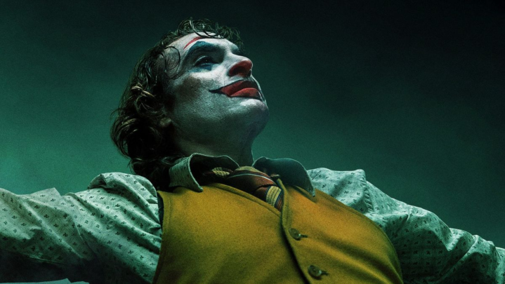

Top 4 Jokers of all time.
Heath Ledger

Heath Ledger’s Joker is the absolute embodiment of chaos, as well as a tour-de-force of acting. Ledger’s delivery of his lines,
as well as his movements and mannerisms, made him such an unsettling presence on-screen
Joaquin Phoenix
Joaquin Phoenix’s Joker (aka Arthur Fleck) is a sympathetic and tragic villain
due to how he is wronged by society at a young age. Orphaned, abused, and poverty-stricken since day one,
Fleck is left to simmer in his misery without proper care and support until it all boils to the surface in an explosion of anger and violence.
Jared Leto
Jared Leto’s Joker was soured by his questionable character design,
limited screen time, and somewhat cringey dialogue. His character can be somewhat forgiven
due to studio interference in the production of Suicide Squad.
Mark Hamill
Who would’ve thought Luke Skywalker would be such a great villain? The legendary Mark Hamill found
his breakout role voicing the Clown Prince of Crime in the ’90s cartoon